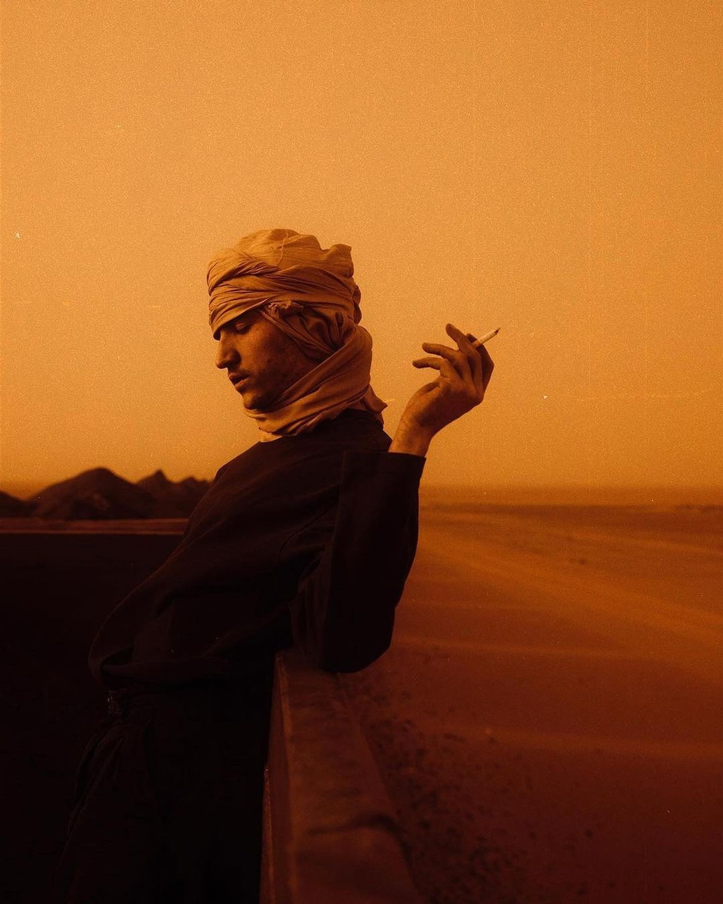
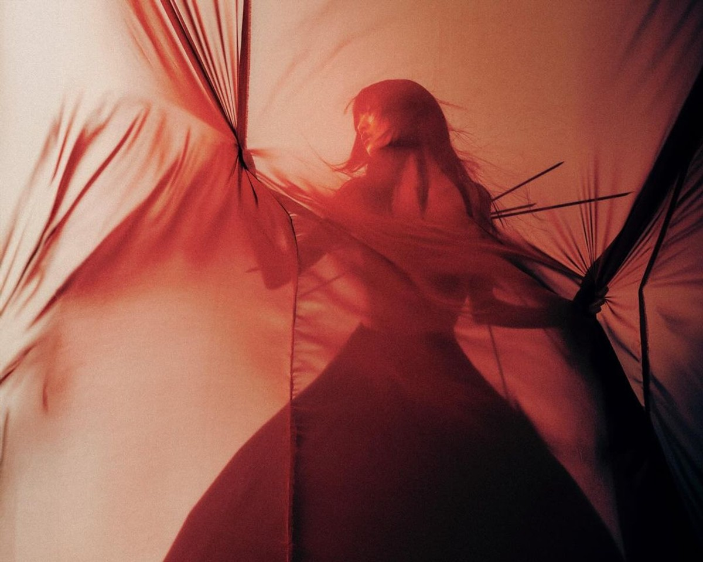
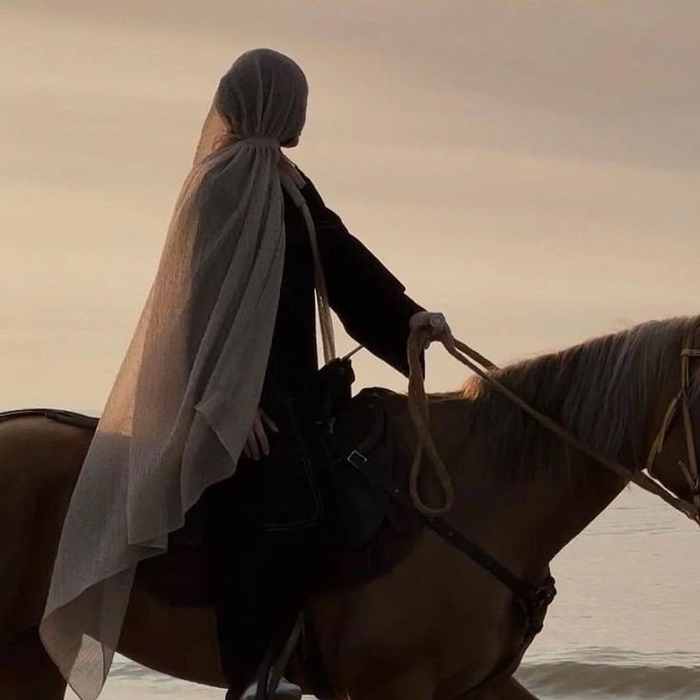

Foundation
Cairo disciplineClassical training, ritual posture, and Egyptian visual memory.

The sovereign profile
Badra is performer, teacher, cultural bridge, and self-constructed symbol. The artist page frames biography as presence rather than résumé.
Roots and ascent
The work connects opera-house precision, folkloric memory, camera awareness, and international stage discipline.
Foundation
Cairo disciplineClassical training, ritual posture, and Egyptian visual memory.
Language
Performance as identityMovement is not entertainment alone. It is authorship and image control.
Reach
Global presenceTeaching, performance, collaborations, editorial work, and cultural direction.
Chronology
Technique formed through Egyptian artistic environments where discipline and symbolism were inseparable.
Stage work and performance language sharpened through international circulation and visual experimentation.
The artist becomes a full system: education, travel, media presence, curation, and a distinct cinematic identity.


Presence
Softness and dominance held in the same frame.

Adornment
Jewelry becomes status, texture, and coded memory.

Authority
Frontality is used to confront, not to explain.